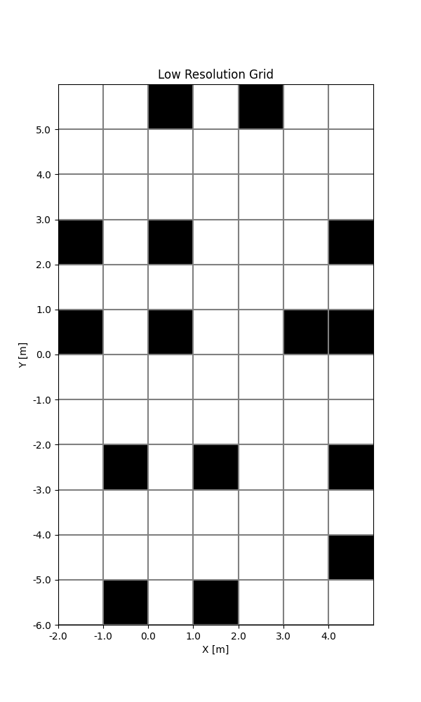
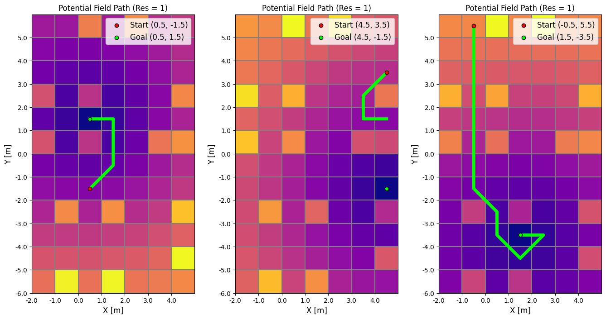
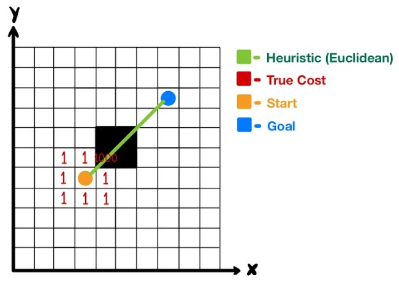
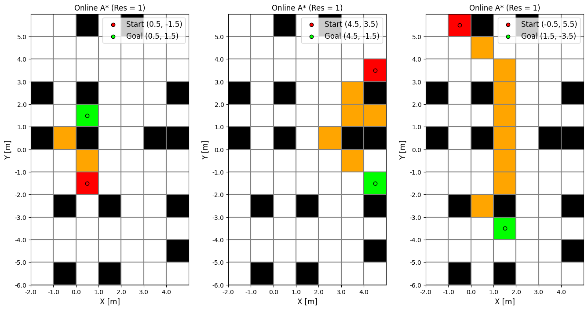
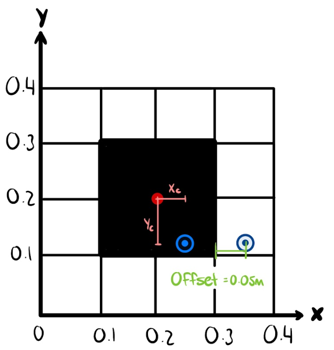
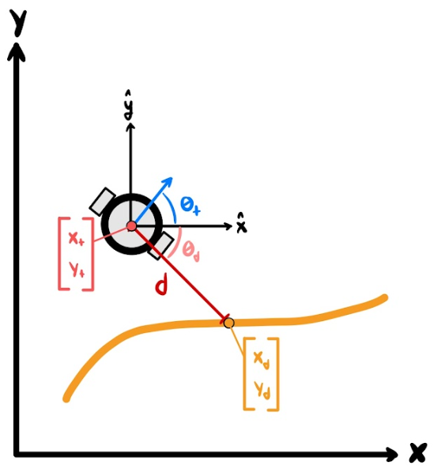
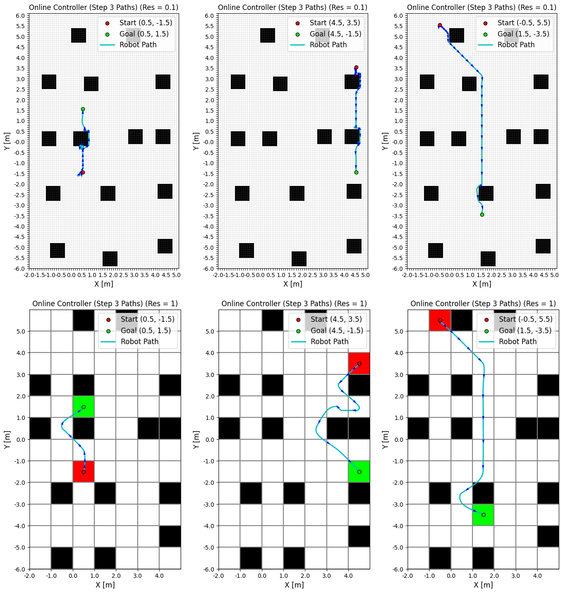

Online A* and Potential Fields (From Scratch)
Building a full autonomous navigation stack from scratch - grid-based world representation, A* and potential-field path planning, an online LRTA* replanner, Bezier trajectory smoothing, and a tuned PID controller - then fusing planning and control into one robot that searches and navigates at the same time.
Status: Completed · Fall 2025 (ME 469)
Overview
This project builds the planning and control layers that sit on top of a robot's state estimate: given a map and a goal, how does the robot decide where to go, and how does it actually get there? Part A compares three path-planning strategies on a discretized grid world - A* search, an artificial potential field, and an online, partially-observable variant of A* - to see how each handles complete vs. incomplete map knowledge. Part B turns those plans into motion: raw A* paths are smoothed with Bezier curves, checked for collisions, and handed to a tuned PID controller, first offline against a precomputed path and then fully online, with the robot planning, learning, and driving all in the same control loop.

The 1x1 m occupancy grid used for Part A, populated with obstacles from a landmark dataset. 8-neighbor connectivity means the planner can only observe and move to the cells immediately around it.
Challenge
Classic A* is complete and optimal, but only because it assumes the robot already knows where every obstacle is - an unrealistic assumption for real navigation. Potential fields relax that assumption's computational cost but introduce their own failure mode: because the robot is just following a gradient, it can walk straight into a local minimum and get stuck with no way to tell it isn't at the goal. Reconciling "the robot doesn't actually know the map" with "the robot still needs to find a good path" - without falling into either trap - was the central problem Part A had to solve.

Potential field paths for three start/goal pairs (C = 0.5). The middle path shows the robot trapped in a local minimum, unable to escape the gradient it's following.
Approach
Offline planning. A* scores each candidate cell with the evaluation function \(f(n) = g(n) + h(n)\), where \(g(n)\) is the true cost of the path so far - 1 for an empty cell, 1000 for an occupied one, so the search is technically free to cross an obstacle but is heavily discouraged from it - and \(h(n)\) is an admissible heuristic estimating the remaining cost to the goal. I used Euclidean distance, \(h(n) = \sqrt{(x_{Goal}-x_n)^2 + (y_{Goal}-y_n)^2}\), which never overestimates the true grid distance and therefore keeps the search both complete and optimal. As a sanity check, a 7-cell true-cost path from \((0,0)\) to \((4,4)\) has a Euclidean heuristic of \(\sqrt{32} \approx 5.66\), safely under the true cost of 7. Potential fields took a different approach entirely: an attractive field pulling toward the goal, \(U(X)_A = C\sqrt{(x_{Goal}-x)^2+(y_{Goal}-y)^2}\), and a repulsive field pushing away from every obstacle, \(U(X)_R = \sum_{i=0}^{N} \frac{1}{\sqrt{(x_{Obs,i}-x)^2+(y_{Obs,i}-y)^2}}\), summed into a single field \(U(X)_{Total} = U(X)_A + U(X)_R\) that the robot descends.

True cost (red) accumulated from the start, and the Euclidean heuristic (green) estimating the remaining distance to the goal - the two terms A* balances at every node.
Online planning. Both of the above assume the robot has the whole map up front. To relax that, I implemented Learning Real-Time A* (LRTA*), which limits the planner to the 8 immediate neighbor cells at each step, updating a Results table (which action, from which state, led to which resulting state) and a Cost table (each state's best known cost, falling back to the heuristic for states it hasn't reached yet) as it goes. This makes the planner complete but no longer optimal - it can commit to a cell it believes is open, only to discover an obstacle once it actually gets there, exactly the "sandwiched node" behavior visible in the middle path below.

Online (LRTA*) paths on the low-res grid. The middle path first commits to a cell between two obstacles, discovers it's blocked once visited, and re-plans around it - complete, but not optimal.
From plans to motion. Part B turns a planned path into a drivable trajectory. Raw A* waypoints are fit with an \(n\)th-order Bezier curve, \(B(t) = \sum_i \sum_j P_i \binom{n}{j}(t_i)^j(1-t_i)^{n-j}\), to get a smooth path; collision avoidance then nudges any trajectory point that sits too close to an obstacle center by a fixed offset in the direction away from it, and a second Bezier pass smooths out the resulting kink. A PID controller then drives the robot along that trajectory using a linear error \(e_v = \sqrt{(x_d-x_t)^2+(y_d-y_t)^2}\) and an angular error \(e_w = \theta_d - \theta_t\), where the desired heading is \(\theta_d = \tan^{-1}\!\big(\frac{y_d-y_t}{x_d-x_t}\big)\), producing commanded velocities \(v = K_{pv}e_v + K_{iv}\int e_v + K_{dv}\dot{e}_v\) and \(w = K_{pw}e_w + K_{iw}\int e_w + K_{dw}\dot{e}_w\), with acceleration limits enforced to match a real mobile robot's dynamics.

Collision avoidance: the trajectory point is shifted away from the obstacle center along its closer axis by a fixed offset.

The linear (\(e_v\)) and angular (\(e_w\)) error terms the PID controller drives to zero at each trajectory point.
Result
Run against precomputed, Bezier-smoothed A* paths, the offline PID controller tracked its input trajectory almost immediately and reached every goal, with only minor edge-clipping where the preprocessing produced a sharper turn than the robot's acceleration limits could really follow. Folding search and control into a single online loop - LRTA* proposing the next cell, the PID controller driving to it, collision avoidance sliding the robot along an obstacle face instead of into it - worked just as well, including in a case where the robot had to explore an obstacle's face, realize its first path was blocked, and turn around to find the real way through.
The full online stack - LRTA* planning, Bezier-free direct control, and collision avoidance - running search and navigation together. The middle case shows the robot exploring an obstacle face, turning around, and finding the better path.
Grid resolution turned out to be a real trade-off, not just a detail: the coarser 1 m grid let the robot move with much larger, more confident steps since it only had to check one cell to know if a direction was blocked, but that same coarseness caused it to miss detail and take less direct paths. The finer 0.1 m grid (with obstacles inflated to 0.7x0.7 m to account for robot size) produced tighter, more optimal-looking paths, at the cost of having to check far more cells - and more exploration - along the way.

Same start/goal pairs, two resolutions: the 0.1 m grid (top) takes tighter, more deliberate paths around obstacles; the 1 m grid (bottom) moves in fewer, larger steps but misses finer routing options.
A few simplifying assumptions are worth naming. The robot is treated as if it knows its exact state after every move, when in reality it would only have a noisy estimate - exactly the gap a filter (see the particle filter project) is meant to close. Collisions here simply clip the robot's motion rather than changing its physical state, and the commanded velocities are assumed to execute perfectly, ignoring motor inefficiency and battery effects a real platform would have to contend with.
Code & Full Report
The full write-up covers every step in detail - grid construction, the A* and potential field derivations, the LRTA* implementation, Bezier trajectory smoothing, collision avoidance, and both the offline and online PID controllers - along with the complete set of result plots at both grid resolutions.